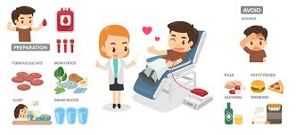

The Blood Donation Process
Donating blood is a simple, safe way to make a big difference in people’s lives. The process typically involves four main steps: registration, health history, the donation itself, and refreshment & recovery. Here's a brief overview of each step.
Registration
Upon arrival, you will be asked to provide some basic information such as your name, address, and photo ID. This helps ensure your eligibility and keeps track of your donation.
Health History

A brief health history interview will be conducted to ensure that it is safe for you to donate blood. You will be asked about your medical history, travel history, and current health status.
Your Donation
The actual blood donation typically takes about 10-15 minutes. A sterile needle is used to draw approximately one pint of blood. This process is safe and relatively painless.
Refreshment & Recovery
After donating, you will be given a refreshment and time to relax. This helps your body replenish and ensures you feel well before leaving. Most people feel fine after donating, but it’s important to take it easy for the rest of the day.